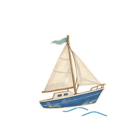

DECORATE IT ONLINE
오늘의 순간을
나답게 기록하다.
사진 한 장에 손글씨와 스티커를 더하고,
친구와 함께 완성하는 공유 다이어리, DIO.
우리의 하루를 펼치는 곳DIO · 실제 앱 화면

사진에서 시작해, 우리만의 한 페이지로.
남겨둔 사진을
꺼내 쓰고 싶은 기록으로.
찍어둔 사진, 문득 떠오른 한마디, 친구의 낙서까지.
DIO는 서로 다른 순간들을 한 페이지에 모아요.
다이어리를 꾸미는 세 가지 방법을 만나보세요.
함께 쓰는 기록
같은 하루도,
서로 다른 이야기니까.
친구를 초대하고 같은 다이어리를 함께 꾸며요. 사진 위에 글을 쓰고 그림을 더하며 각자의 시선으로 하루를 채울 수 있어요.
공동 편집 알아보기 ↗사진이 스티커가 되는 순간
간직하고 싶은 건
사진 속 작은 한 조각.
사진에서 원하는 대상을 골라 오려보세요. 함께 먹은 디저트도, 여행에서 만난 풍경도 나만의 스티커가 돼요.
스티커 만들기 알아보기 ↗내 손글씨로 남기는 마음
익숙한 내 글씨가
다이어리의 폰트로.
36자를 손으로 쓰면 나만의 폰트를 만들 수 있어요. 키보드로 적은 짧은 문장에도 내 손글씨의 모양을 담아보세요.
손글씨 폰트 알아보기 ↗작은 움직임, 더 생생한 기록
움직이는 스티커로
한 페이지를 더 즐겁게.
가만히 있는 사진에 작은 움직임을 더해보세요.
동적 스티커와 꾸미기 도구는 기능 소개에서 직접 살펴볼 수 있어요.

나의 페이지에, 작은 움직임.혼자서도 다이어리를 쓸 수 있나요?
네. 개인 다이어리로 기록할 수 있고, 친구를 초대해 같은 다이어리를 함께 편집할 수도 있어요.
사진을 직접 스티커로 만들 수 있나요?
사진 속 원하는 대상을 골라 오린 뒤 스티커로 저장하고 페이지에 붙일 수 있어요.
이 페이지에서 앱을 사용할 수 있나요?
이곳은 DIO 프로젝트 소개 사이트예요. 주요 기능 페이지의 꾸미기 미리보기로 편집 방식을 살펴볼 수 있어요.